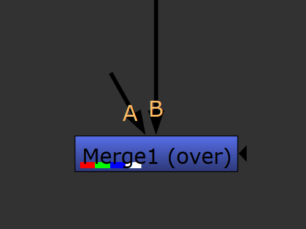
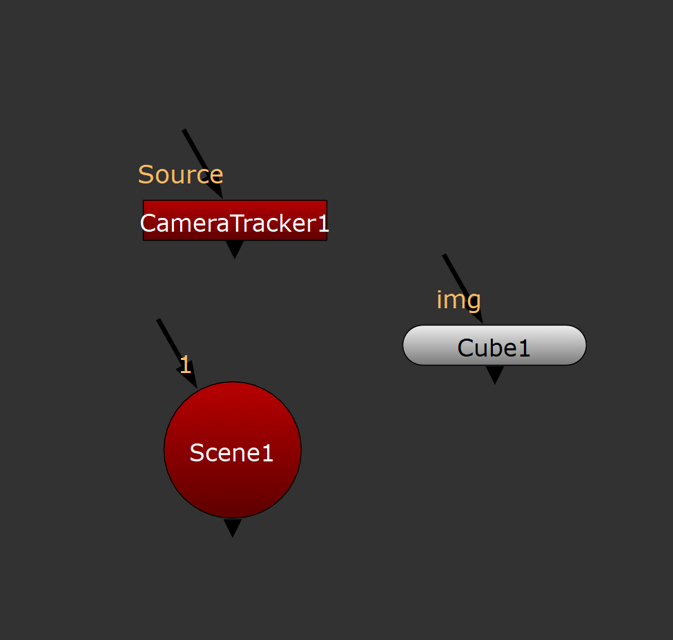
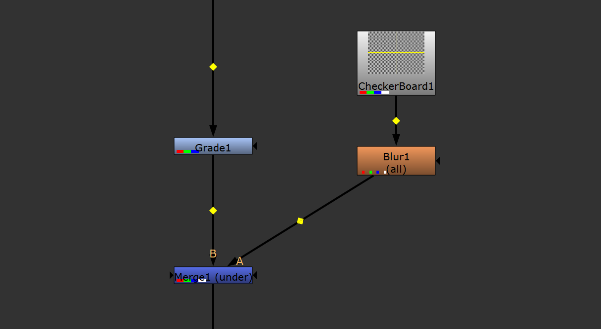
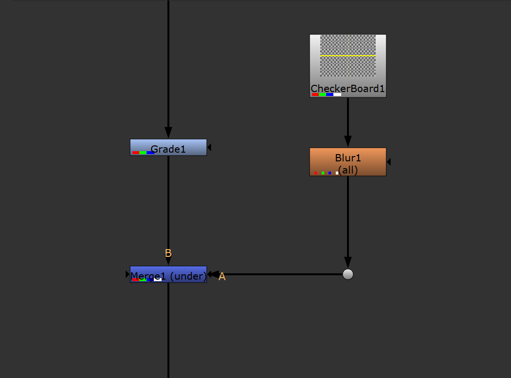
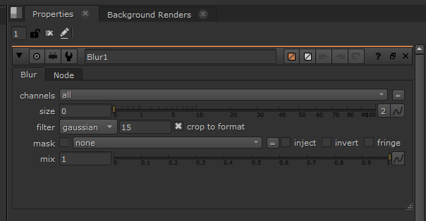
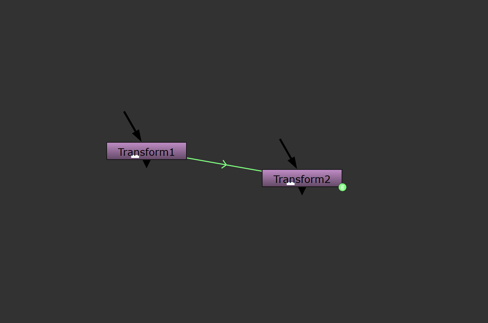
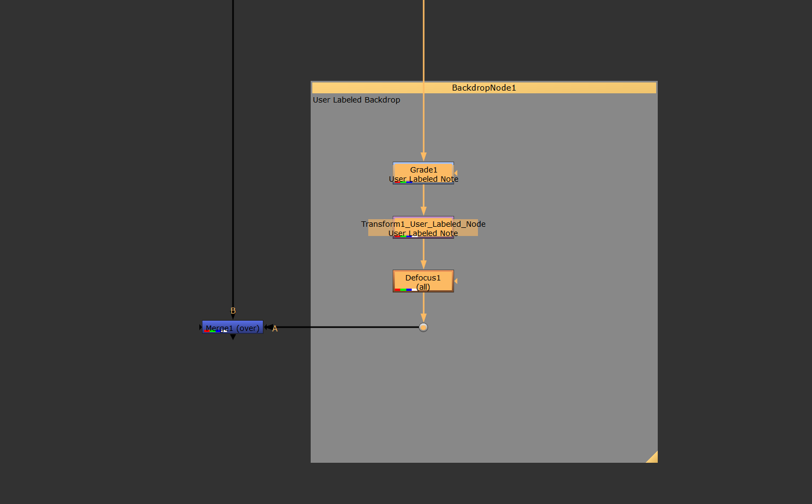
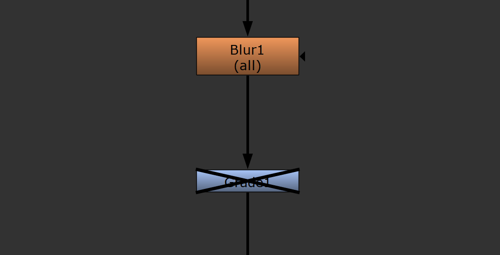

Nuke 12.2v5
Multi In, Single Out
Nuke is a compositing program popular in the visual effects industry. It allows artists to build node graphs to add explosions, remove logos, track the movement of footage, and many other tasks. Each node in Nuke represents an action that manipulates or generates 2D images or 3D data.
Anatomy of a Nuke Node

Merge is an example of a standard 2D Nuke node. By default it has two inputs and performs a Porter-Duff “over” compositing operation. Compared to other compositors, Nuke consistently gives its users low-level access to individual channels that make up an image. Active channels are displayed as a badge on the bottom left side of each node in the graph, this merge node has a red, green, blue, and alpha channel available to it. Node inputs are labelled with floating light-orange text above each arrow based on the type of data the node expects or when more information is required to instruct users how to connect the node to an appropriate sources. When a node has a single input that expects RGBA data, no label is used. Nuke nodes also commonly feature a mask input collapsed with no arrow stem on the right side of nodes where available. This mask input serves to constrain the effect of the node to the masked area when an alpha channel is connected to the mask input.

Nuke’s node types are distinguished based on shape and colour. 2D nodes that typically operate on RGBA channels are rectangular and come in a variety of colours based on their purpose, whereas 3D nodes are typically circular or rounded and are rendered in bright red or Nuke’s default grey. Nodes like CameraTracker (used to solve movement from a 2D video and generate 3D camera position data) and ScanlineRender (used to render a 3D scene into 2D image data) bridge the gaps between Nuke’s 2D and 3D systems by adopting the red colour of Nuke’s 3D system with the form factor of the rest of its 2D nodes.
Nuke’s Node-graph

When holding control Nuke exposes yellow diamonds to the user in the mid-point of each connected pipe.

When these pipes are clicked on and dragged they become elbow connecter nodes (referred to in Nuke’s documentation as dot nodes) allowing artists to better organize the shape of their node graphs.
Properties and Expression Links

When selected each node opens a corresponding window in the properties tab. This window exposes the various properties that the user can edit to control the behaviour of the node.

Nuke’s expression linking system allows users to take any value from the properties panel and use them to control the values of other nodes in the graph. These expression linked relationships are displayed to the user as thinner green arrows between the linked nodes as well as a “E” in a green circle on the node driven by the expression link.
Backdrops and Disabled Nodes

Each node name can be changed by the user, although they must remain unique. Nodes in Nuke also have a user-accessible note field that allows users to write text that will appear in the graph below the node name. A set of Nuke nodes can also be organized in a backdrop. A Backdrop’s colour can be set by the user and they are automatically resized to encompass a set of nodes if added while the user has one or more nodes selected.

Nodes in Nuke can be easily disabled by the user without being removed from the graph. This allows users to quickly turn off selected sections of their project so that they can easily judge how they affect the output.
Other Points of Interest
Nuke’s node-graph can optionally display a grid that nodes can snap to.
Nuke nodes can be grouped to act as a single node. Individual specific properties from any node inside the group can be passed through to the group node’s properties located in the properties panel. This sub-graph is commonly used to create custom tools and is not intended to be used as an organization strategy.
Nuke scripts are stored in a plain-text format allowing artists to easily share single nodes or entire node graphs and import the node tree of a whole project file into another. This system has resulted in a small ecosystem of custom Nuke tools and it is very common for studios to maintain a custom library of these user-created nodes tailored to their needs.
The elements of the node graph can be resized according to a user’s preferences, for example, some users that use Nuke with a tablet prefer larger clickable areas.
When a user wants to view the output of a node graph they connect the node they want to look at to Nuke’s “Viewer” node which will then display the resulting image in the Viewer window. To write the resulting image or geometry to disk users must connect either a Write or WriteGeo node to 2D or 3D nodes respectively.